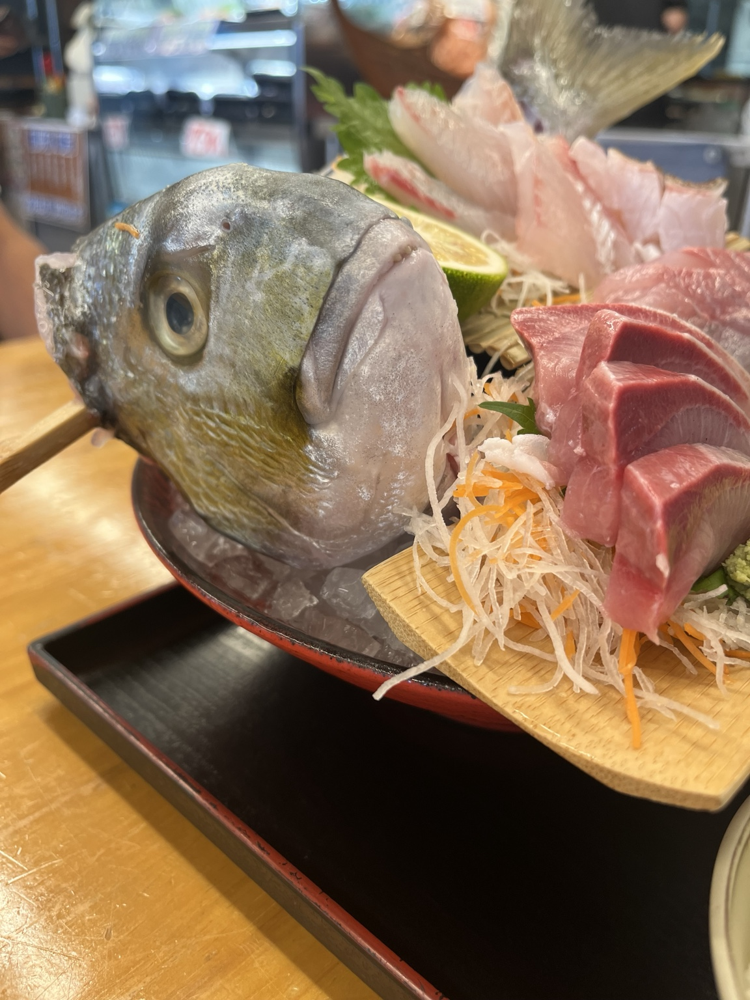
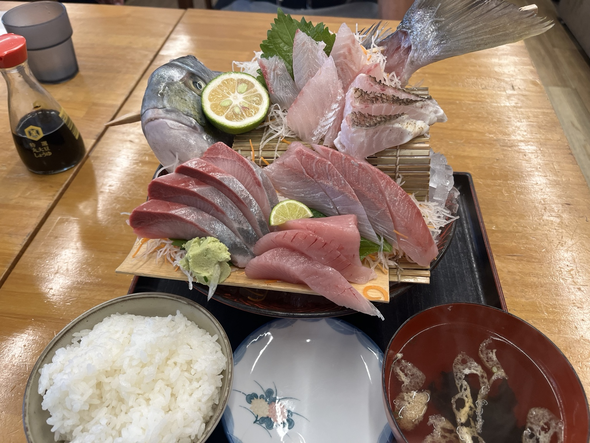
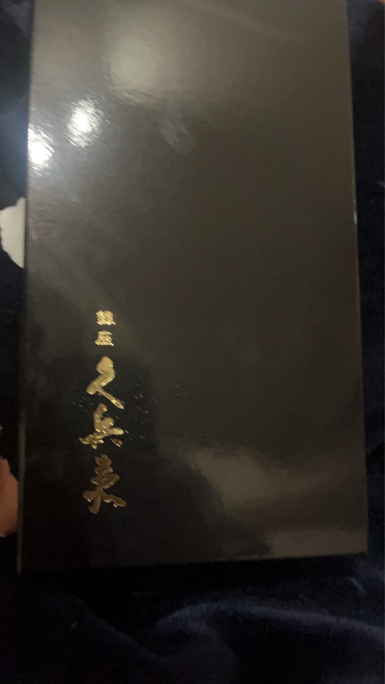
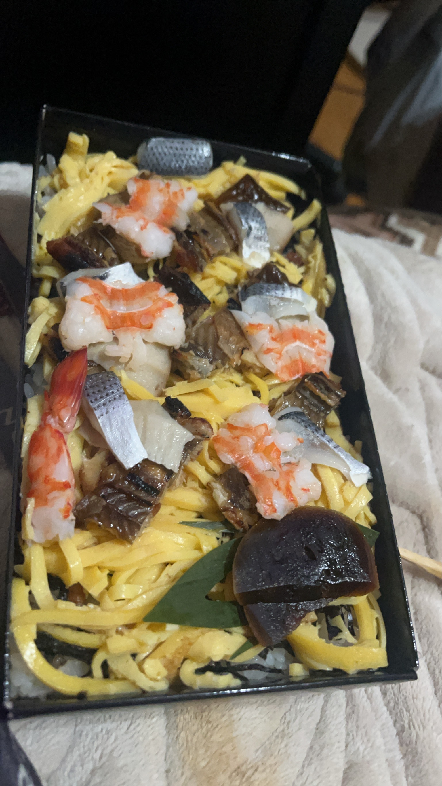

2026年9月26日｜忍の旅日記
昨日、裕子さんと口げんかした忍。男は黙って背中で語る……つもりが、涙で前がよく見えない。気づけば、なぜか高知県にいた。
「しばらく旅に出ます」――そんな壮大な決意だったかどうかはさておき、目の前に現れたのは、これまた壮大なお刺身。お魚まで「えっ、そこまで来たの？」という顔でこちらを見ている。
夫婦げんかの行き先が高知で、家出の食卓が豪華なお刺身。悲劇の主人公になるには、少々おいしすぎる展開である。
それでも、旅先でおいしいものに出会うと、ふと裕子さんにも食べさせたいと思ったりする。……たぶん。まずはお刺身をいただいて、仲直りの言葉を考えよう。
本日の教訓：家出は計画的に。仲直りは、できればお土産つきで。
高知で出会った、ごちそうたち




追伸：本日のお魚は何も悪くありません。夫婦げんかの続きは、帰ってからゆっくり。
※ユーモアを交えた日記です。会話や心情の一部は創作表現です。「銀座 久兵衛」の写真は高知での撮影とは断定していません。